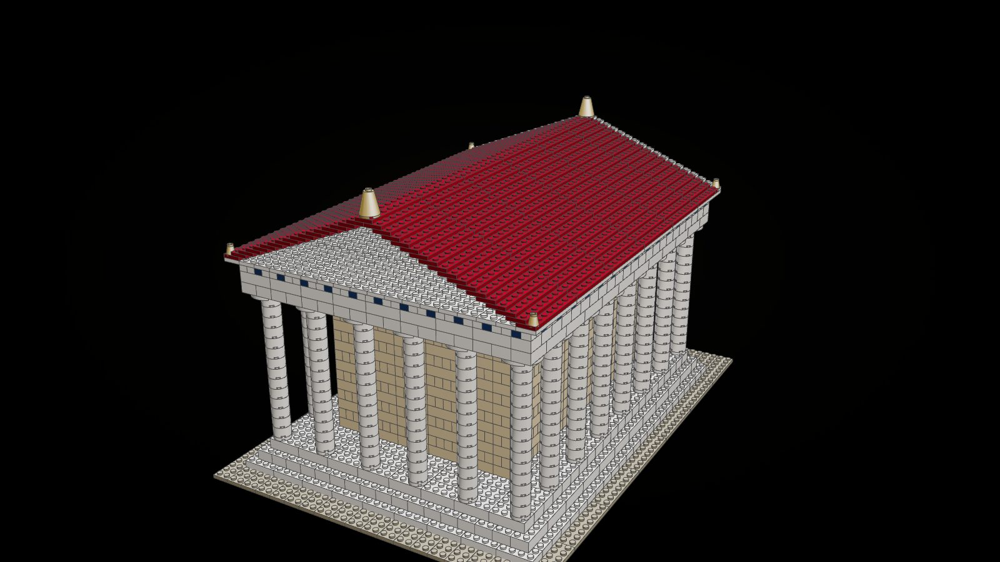
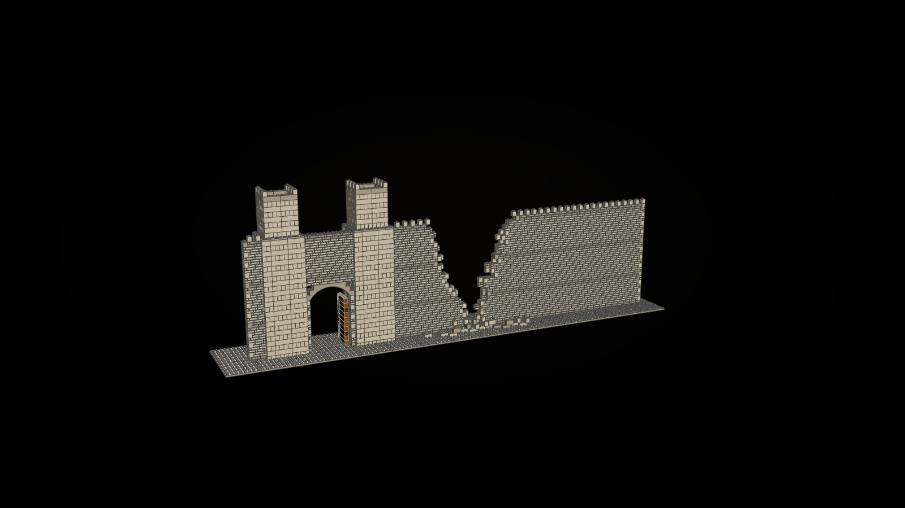
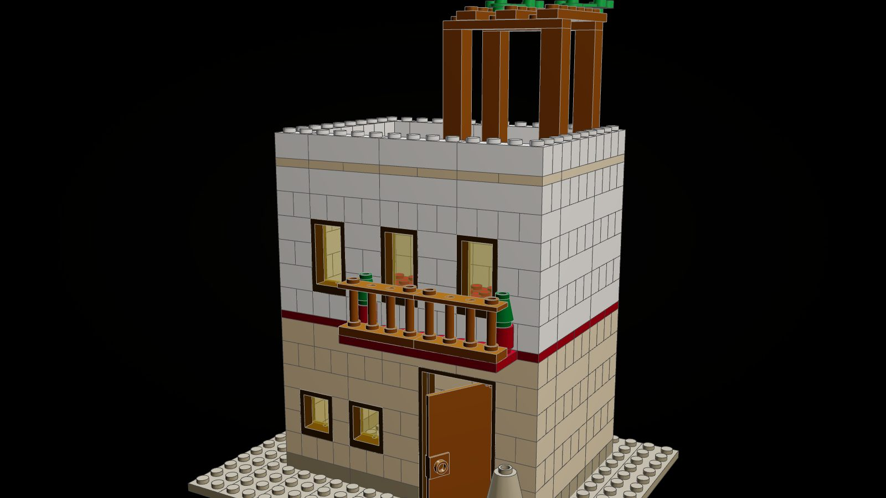
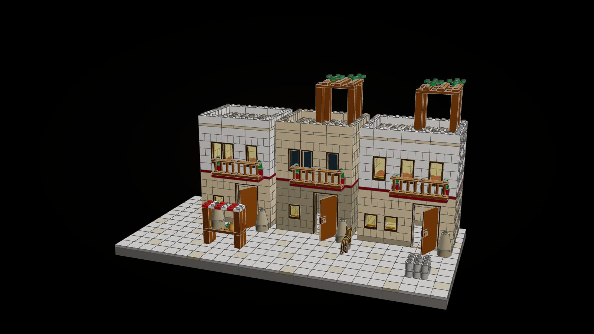
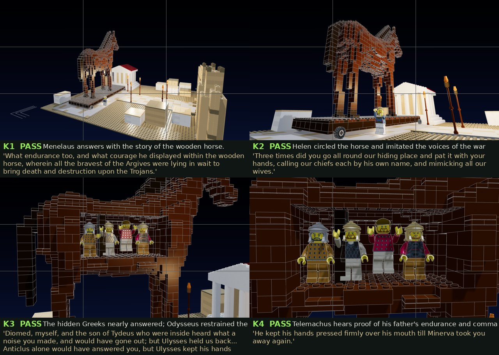
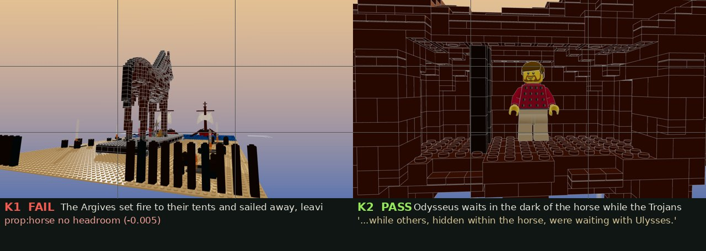

The Citadel of Troy
The city the Wooden Horse was dragged into, built to the horse's own scale and sold the way a street is built: a temple, a gate, and houses you buy as many of as your street needs. Together they are the film's set; apart, each is a model worth a shelf.
"The Trojans had drawn it into their citadel, and sat round it talking and not knowing what to do." (Odyssey VIII)
At the scale of the world
A minifigure is a person of 1.75 m, so a course of bricks is 0.44 m and a stud 0.37 m. The horse on its cart stands 15 m, as the legend has it, and everything here is sized to match: the lower wall 10 m, the gate towers 14 m, the gate 3.7 m wide, temple columns 6 m, houses of two storeys 5.7 m to the parapet. A figure in the street looks up at the horse the way a Trojan would have.

The Temple of Athena
The goal of the Trojans' procession, where the horse was to stand as an offering.
- Peripteral: six columns by eight, each on its base with a capital, on a three-step stylobate
- An entablature with its triglyphs painted blue, as Greek temples were painted, under a cornice a stud proud
- A dark red roof rising to a white pediment, gilt finials at the ridge and corners
- The cella inside, its door open on the Palladion: Athena's image, gold in the dark
- The altar before the steps, its fire, and two gold cups of the offering

The Scaean Gate and the Breach
The horse was too big for the gate, so the Trojans tore down their own wall. This kit is both halves of that story.
- A wall of two skins in running bond, twenty-four courses high, with its battlements
- The gate under a stone arch, its two timber leaves swung open inside, between towers that step in as they rise
- The breach, eight metres wide: each course's edge torn a stud or two differently, never overhanging the one below
- Rubble thrown down inside and outside, heaps of one to three blocks

A Trojan House
A modular building in the manner of a city street: every house stands beside the next, and each is a little different.
- A wooden door ajar in its frame, windows lit from within (lamplight on trans-yellow panes)
- A dark red string course that runs out over the street as a balcony, with a spindled rail and potted shrubs
- Tall windows above; a flat roof with a parapet and a pergola under vine leaves
- Storage jars at the door, the shape of a pithos: a round brick and a cone
- Variations: white or tan stone, a dark or lit upper floor, a bare roof or a pergola

A Street in Troy
Three houses in a row on their paving, and the life between them: a market stall under a striped awning with fruit and a jar, a well, and a dog at a threshold. In the film's citadel the same pieces make the streets round the forecourt, with crows on the parapets on the night the city fell.
The film set
All of it together: the citadel of 11,646 pieces, every one standing on the studs below it, with the Wooden Horse in the forecourt before the temple. These are frames from the film, checked by the keyframe gate.

